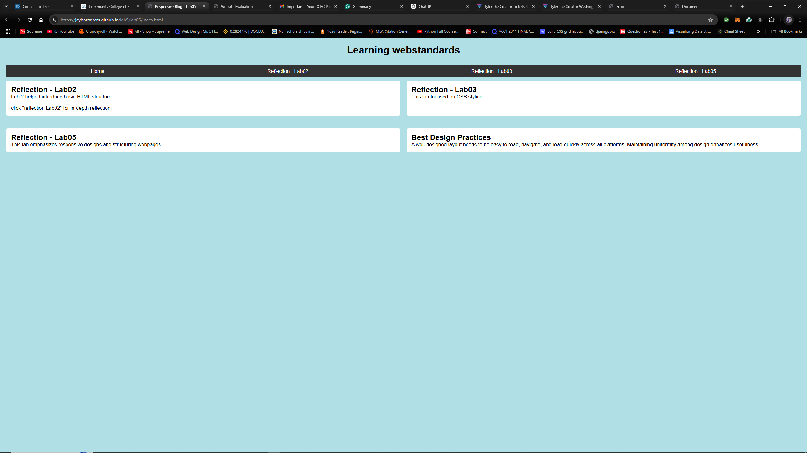

For Lab 4, we were instructed to showcase images on three different web pages. Images play a crucial role in HTML as they enhance the design of a website and allow for the styling of backgrounds, making the site more visually appealing and engaging.
For Lab 4, we were instructed to showcase images on three different web pages. Images play a crucial role in HTML as they enhance the design of a website and allow for the styling of backgrounds, making the site more visually appealing and engaging.
For Lab 5, we were instructed to modify our blog page from Lab 3 by creating a single-column layout and making the site mobile-friendly. A well-structured layout is essential for providing a positive user experience, as it allows users to navigate and view the site more easily. Additionally, ensuring the site is mobile-friendly is crucial, as the majority of users now access websites through their phones.
For Lab 6, we were assigned to learn about CRAP principles and accessibility. CRAP is an acronym for essential design principles: Contrast, Repetition, Alignment, and Proximity. These principles are crucial for web developers to understand, as they help create a better user interface (UI) and user experience (UX) for website visitors.